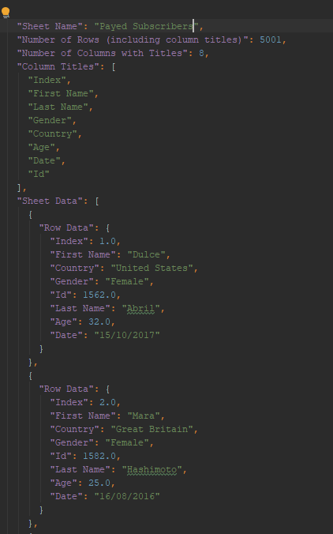

This is an simple preview of a utility that converts an Excel workbook to a JSON String!
It will currently only accept files with extension ".xlsx"
Instructions
1 - Make sure the excel file as at least one sheet.
2 - Sheets must have a table starting in cell A1. (See the below images as example)
3 - Select the File by clicking the Browse button below.
4 - Click Convert and recieve the JSON string!
